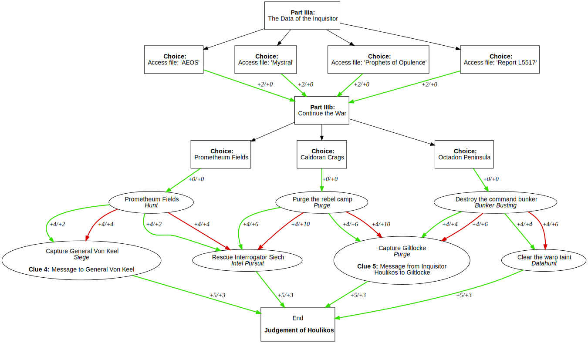

Event: Unexpected Revolt
Since the beginning of October, we may participate in a new event: Unexpected Revolt
This event features a new investigation – a priority assignment – on the planet of Marsonia-III. More or less it’s story revels around a missing inquisitor. Choices throughout the assignment drive the story into different directions and to new missions. After finishing enough missions, you can reap the fruits. As always, your overall success rating influences the glory you deserve.
Since it is not that easy to find a suitable way through the assignment and the forks in its path, I decided to make some quick graphs to help you plan your route through the mess on Marsionia-III.
The graphs show the different missions and how they are connected. Each connection features the effects on succcess and damage, in the format +success level / +damage level.
If you fail a mission, the red path shows the next. If you succeed, green is your way to go.
If there is an orange path, it often is used instead of the parallel green path. These paths are given in the mission files, but I don’t know yet how they are chosen.
Prelude
After starting the event, you have a choice between three different preparations. They all lead to the same mission and have the same effects on success and damage, so choose whatever you like. The first mission also features the first clue Message from Interrogator Siech.
{kind=link}
After the first mission, you have three paths to follow. Choose one and continue at the corresponding investigation below.
Part I - Investigation: Chasing Giltlocke to the Hinterlands
If you succeed in all missions, you will eventually reach the private warehouse. There you can find the clue Warehouse Datalog.
{kind=link}
Part I - Investigation: Visit the Stronghold Gamma 79
Regardless which path you take, the last mission in this investigation is always a purge in the underground. There you can find the clue Message from Inquisitor Houlikos to Blaine.
{kind=link}
Part I - Investigation: Follow Inquisitor Houlikos to Hive Secundus
{kind=link}
Part II - Hive Secundus
The story unfolds. Much to do, but no clues.
{kind=link}
Part III - Finale
The grande finale. Depending on the path you can either find the clue Message to General Von Keel or Message from Inquisitor Houlikos to Giltlocke. That’s why you need to replay the event to get all clues. 
{kind=link}
The last thing is to state your opinion about Inquisitor Houlikos and his future. This is only fluff, no effects on the rewards whatsoever.
May the Emperor protect you!
- Shihan